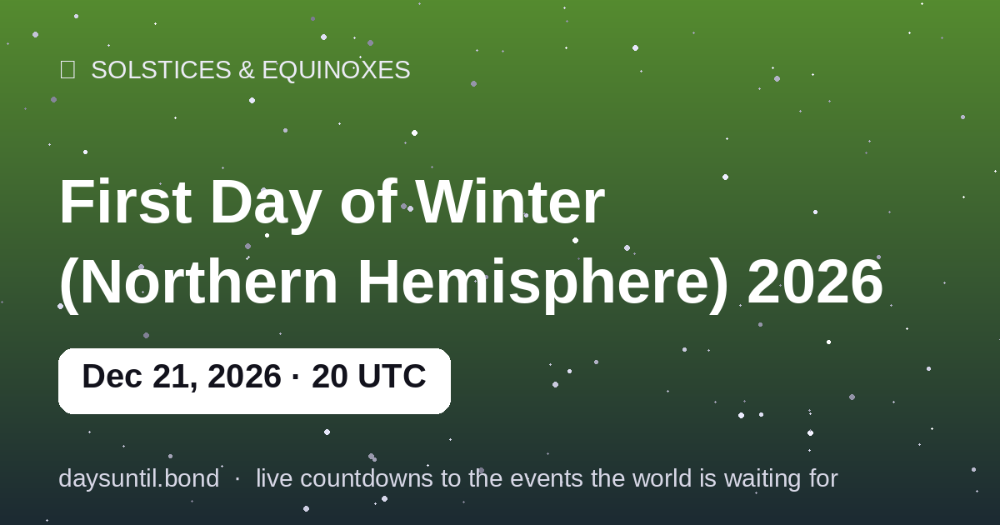

How Many Days Until First Day of Winter (Northern Hemisphere) 2026?
First Day of Winter (Northern Hemisphere) 2026 falls on Monday, December 21, 2026.
The live counter above updates every second in your local time zone. The date and weekday are shown in the event details.

Quick facts
| Exact moment (UTC) | December 21, 2026 · 20:50 |
|---|---|
| Event | December Solstice |
| Northern Hemisphere | Astronomical winter begins |
| Southern Hemisphere | Astronomical summer begins |
About First Day of Winter (Northern Hemisphere) 2026
The December solstice of 2026 occurs on December 21, 2026 at 20:50 UTC. It marks the astronomical start of winter in the Northern Hemisphere and summer in the Southern Hemisphere.
The solstice is one exact moment worldwide; its local clock time and even calendar date depend on your time zone.
When does winter 2026 begin?
Astronomical winter in the Northern Hemisphere begins at the December solstice on Monday, December 21, 2026 at 20:50 UTC. The December solstice reference lists the same moment as 3:50 p.m. EST in New York.
The exact solstice is one instant worldwide. Local clocks convert that instant to each time zone, so the date can appear as December 22 in places far east of UTC.
Why the December solstice marks winter in the north
Earth's axis is tilted relative to its orbit around the Sun. In December, the Northern Hemisphere is tilted away from the Sun, so the Sun follows its lowest and shortest daily path across the sky. This produces the year's shortest daylight period for locations north of the equator.
At the same moment, the Southern Hemisphere is tilted toward the Sun and begins astronomical summer. The seasons are opposite across the equator.
Is December 21 the shortest day everywhere?
The solstice marks the shortest day of the year in the Northern Hemisphere and the longest day in the Southern Hemisphere, but the amount of daylight depends on latitude. Places close to the equator see a smaller seasonal change than locations farther north or south.
The US National Weather Service explanation of astronomical seasons describes how Earth's axial tilt drives the seasons and the solstice dates.
Astronomical winter versus meteorological winter
Astronomical winter begins at the solstice, which is tied to Earth's position in its orbit. Meteorological winter uses whole calendar months for climate statistics: December, January and February in the Northern Hemisphere.
That means meteorological winter starts on December 1, while astronomical winter begins on December 21 in 2026. Both definitions are valid, but they answer different questions.
What changes after the winter solstice?
After the December solstice, daylight generally begins increasing in the Northern Hemisphere and decreasing in the Southern Hemisphere. The change is gradual at first and varies with latitude; sunrise and sunset do not shift by the same amount each day.
The solstice is therefore both the start of astronomical winter in the north and the turning point after which the days begin lengthening again.
Your First Day of Winter (Northern Hemisphere) 2026 countdown milestones
It is easier to plan against fixed points than against a number that moves. These are the dates on which the countdown to First Day of Winter (Northern Hemisphere) 2026 passes each marker between now and the day itself — the last one falls on Sunday 20 December, when there will be 1 day left.
| Milestone | Day | Date | Remaining |
|---|---|---|---|
| 14 days | Monday | 07 December 2026 | 14 days to go |
| 7 days | Monday | 14 December 2026 | 7 days to go |
| 3 days | Friday | 18 December 2026 | 3 days to go |
| 1 days | Sunday | 20 December 2026 | 1 day to go |
How the remaining time breaks down
26 days is the headline, but it is rarely the number that helps. 18 of those are weekdays and 8 fall on a weekend, which is the split that matters if you are planning around work. It is 3 weeks and 5 days, or roughly 0.9 months, or about 624 hours.
| Unit | Until First Day of Winter (Northern Hemisphere) 2026 |
|---|---|
| Days | 26 |
| Weeks | 3 weeks and 5 days |
| Months (approx) | 0.9 |
| Weekdays | 18 |
| Weekend days | 8 |
| Hours | 624 |
| Sleeps | 26 |
Working days are Monday to Friday and do not subtract public holidays, which vary by country and employer — the full month-by-month split is on our weekday page for First Day of Winter (Northern Hemisphere) 2026.